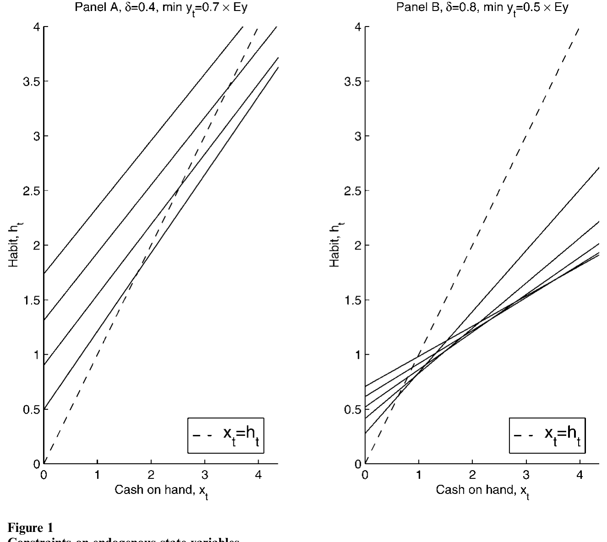
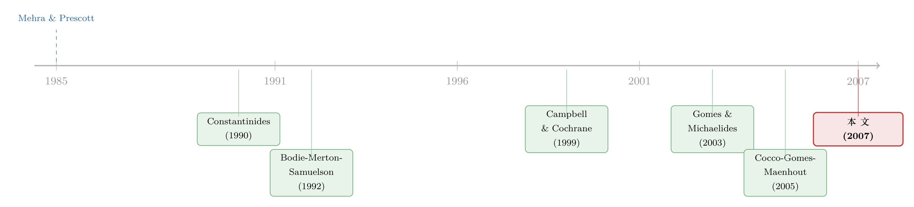

年轻人为什么不敢买股票？——把「习惯」请进生命周期的投资账本
本文读的是 Polkovnichenko (2007, Review of Financial Studies)：把「加性习惯形成」偏好塞进一个有不可保险劳动收入风险的生命周期模型里，作者解析地推导出「习惯—财富」可行性约束，并证明这条约束只取决于最坏的未来收入路径与习惯强度，而与最坏收入发生的概率无关。结果是——哪怕只有一丝陷入严重收入冲击的可能，投资者也会大幅压低股票仓位；而且在一段低到中等的财富区间里，股票占比竟然随财富上升。于是模型自然给出了一个标准模型给不出的事实：年轻人的组合，比中年人更保守。
1 一个标准模型一直答不上来的问题
先从一个尴尬说起。
把教科书里的生命周期模型（life-cycle model）拿来，给它一个合理的参数：常相对风险厌恶 (constant relative risk aversion, CRRA) 效用、一份有风险但「像债券」的劳动收入、一只股票一只债券。然后问它一个最朴素的问题：一个二十几岁、刚工作、几乎没什么金融财富的年轻人，应该把钱投到哪里？
模型会斩钉截铁地回答：全仓股票。
直觉其实不难理解。年轻人最值钱的资产不是银行账户，而是「人力资本」——未来几十年要赚的工资的现值。而劳动收入虽然有风险，它的风险结构更像债券而不是股票（这一点 Jagannathan and Kocherlakota (1996) 讲得很透）。既然你的人力资本已经替你「持有」了一大笔类债券资产，那么金融财富这一小块，理应全部押到股票上去，才能把整体组合配平。年纪越轻，人力资本相对越大，就越该激进。
可现实里的年轻人偏偏相反：他们手里那点钱，往往放得很保守，参与股市的比例低、配置也谨慎。这不是一个孤立的反常。它其实是股权溢价之谜 (equity premium puzzle) 在个体层面的镜像——总量上「人们为什么不肯多持有股票」，落到生命周期上，就成了「年轻人为什么不肯多持有股票」。一个连年轻人组合都解释不了的微观模型，又怎么能心安理得地去当宏观资产定价模型的地基？
接着，一个自然的问题是：到底缺了什么，才让模型和数据对不上？
这篇文章给出的答案，是两个字：习惯。
2 把「习惯」请进来：偏好与约束
习惯形成偏好在资产定价里早已不是新鲜事。它的核心想法朴素得近乎残忍：人对消费的痛苦或快乐，不是看消费的绝对水平，而是看它相对于自己已经习惯的那条线高出多少。少吃一顿无所谓，但从天天有肉到顿顿吃糠，那是会要命的。
本文用的是加性习惯 (additive habit formation)：效用定义在「消费减去习惯」这个差额 \(C_t - H_t\) 上，而不是像 Abel (1990) 那种「catching-up-with-the-Joneses」的比例习惯 (ratio habit) 定义在 \(C_t/H_t\) 上。这个区别后面会变得至关重要。投资者求解的，是下面这个跨期效用最大化问题：
$$ U_{t_0} = E_{t_0}\!\left[\sum_{t=t_0}^{T}\beta^{\,t-t_0}\frac{(C_t - H_t)^{1-\gamma}}{1-\gamma} + \beta^{\,T+1-t_0}B(W_{T+1})\right] $$
其中 \(\beta<1\) 是主观贴现因子，\(\gamma>0\) 是曲率参数，\(B(\cdot)\) 是遗赠函数。习惯本身被设成「上一期消费的一个固定比例」：
$$ H_t = \alpha\,C_{t-1}, \qquad H_{t_0}=H^0 $$
这里的 \(\alpha\) 就是习惯强度 (habit strength)。它是内部习惯（internal habit）——你今天的消费，会亲手抬高你明天的「底线」。
劳动收入则遵循标准的「永久 + 暂时」冲击结构：
$$ Y_t = f(t)\,P_t\,\varepsilon_t, \qquad P_t = P_{t-1}\,\eta_t $$
\(f(t)\) 是年龄相关的确定性部分，\(P_t\) 是受永久冲击 \(\eta_t\) 驱动的永久收入成分，\(\varepsilon_t\) 是暂时冲击。退休后收入变成退休前永久收入的一个固定比例 \(\lambda\)（替代率）。可投资的只有两样东西：付固定利率 \(r_b\) 的债券，和付随机回报 \(r_{s,t}\) 的股票，都不许卖空。
但真正让这个模型与众不同的，不是效用函数，而是它附带的那条约束：
$$ X_t = C_t + B_t + S_t, \quad B_t\ge 0,\ S_t\ge 0, \quad C_t > H_t,\ \ t=t_0,\dots,T $$
前三条是普通的预算、借款、卖空约束。最后那条 \(C_t > H_t\) 才是加性习惯的灵魂——消费在任何时刻、任何随机情形下都不能跌破习惯。一旦 \(C_t \le H_t\)，效用就是负无穷。这不是一句软绵绵的偏好陈述，而是一条硬约束：它会顺着时间往回传染。
3 真正关键的一步：可行性约束只认「最坏」，不认「概率」
这正是全文的枢纽，值得慢慢拆。
「消费不能跌破习惯」这句话，听上去只管当下。但它其实管得更宽。考虑一个预算上完全合法的策略：今天把所有钱都吃光，\(C_t = X_t > H_t\)。当下没问题。可如果明天哪怕在最坏的那个收入状态下，你都凑不齐足够的钱来维持习惯，那么今天这种「吃光」就是不可行的——因为它会把你逼进一个明天无路可走的角落。
于是约束像多米诺骨牌一样从终点 \(T\) 向回倒推。我们一步步看最干净的那一格，\(T-1\)：
第一步，在最后一期 \(T\)，没有未来可担心，唯一的约束就是手上现金高于习惯：\(X_T > H_T\)。
第二步，回到 \(T-1\)。即便投资者把消费压到最低 \(C_{T-1}=H_{T-1}\)（这样下期习惯 \(H_T=\alpha C_{T-1}=\alpha H_{T-1}\)，并留下最多的储蓄 \(X_{T-1}-H_{T-1}\)），他还得保证：在明天「收入最低 + 股票回报为负」这个最坏组合下，现金仍能盖住习惯。既然最坏情形里股票是亏的，要让最坏现金最大化，理性的做法是一股股票都不买，全押债券。
第三步，于是最坏情形下明天的现金是 \(X_T=(1+r_b)(X_{T-1}-H_{T-1})+\underline{Y}_T\)，其中 \(\underline{Y}_T\) 是 \(T\) 期可能的最低劳动收入。要求 \(X_T > H_T = \alpha H_{T-1}\)，整理后就得到了 \(T-1\) 期可行域的边界（论文式 10）：
$$ \frac{\underline{Y}_T}{1+r_b} + X_{T-1} - \left(1 + \frac{\alpha}{1+r_b}\right)H_{T-1} > 0 $$
把这套倒推推广到任意时点 \(t\)，作者得到一族以 \(\nu=0,\dots,T-t\) 为指标的约束（论文式 11）。这就是这篇论文最核心的方程，把它逐块拆开来看：
盯着这个不等式，会看到一件相当反直觉的事。
约束的左边，由两块「资源」（未来最坏收入的贴现现值 + 当期现金）减去一块「负债」（被 \(\alpha\) 逐期放大的未来习惯成本）。只要把它写出来，你立刻发现：里面只有最坏收入 \(Y_{t+k}\) 和习惯强度 \(\alpha\)，根本没有任何概率。
这就是本文最漂亮、也最违反直觉的论断：
可行域的边界，只取决于最坏可能的未来收入路径和习惯强度 \(\alpha\)，而与那个最坏情形发生的概率毫无关系。哪怕灾难只有万分之一的可能，模型也必须保证「灾难真来了也饿不死」——因为 \(C\le H\) 的惩罚是负无穷，期望效用里这一项的权重再小，乘上负无穷还是负无穷。
换句话说，习惯偏好把投资者变成了一个彻底的「最坏情形主义者」。他不在乎坏事多大概率发生，只在乎坏事一旦发生，自己的消费会不会被钉死在习惯线之下。
为了把这片可行的「习惯—财富」区域看清楚，作者做了一个状态变换，把不可行的状态排除掉。下面这张图就是这套可行域的几何示意。

Figure 2: To rule out inadmissible states, it is convenient to transform
4 反转：股票占比竟然随财富「上升」
有了这条只认最坏、不认概率的约束，模型的行为就和标准的期望效用 (expected utility, EU) 模型彻底分道扬镳了。
最重要的一个反转是：组合政策在财富上不再单调。
在标准 CRRA 模型里，股票占比随财富单调下降（财富越多，人力资本这块「类债券」相对越小，就越要用债券去配平）。但在习惯模型里，存在一段从低到中等的财富区间（指超出可行边界的那部分），股票占比反而随金融财富上升。
直觉是这样的：当财富很低、刚刚贴着可行边界时，投资者最怕的就是「习惯撑不住」。为了保证在任何收入和回报情形下都能把习惯安全地养下去，他只能抱着最安全的债券。可随着财富一点点累积，「在逆境里也养得起习惯」这件事越来越不构成威胁，他才敢慢慢把钱挪向股票。等到财富足够高，习惯的阴影彻底散去，模型又回到了 EU 的老剧本——股票占比随财富下降，因为此时主导的力量重新变成了「人力资本像债券、要用股票来配平」。
于是「先升后降」的驼峰，自然就长出来了。
接着，把这条非单调的政策函数沿生命周期铺开，那个一开始让我们尴尬的问题就被解开了：
- 年轻人金融财富少，还没攒够「把消费稳稳托在习惯之上」的本钱，正卡在政策函数上升的那一段，所以组合保守；
- 中年人财富厚实，习惯不再是威胁，组合激进；
- 到了生命的后半段，股票占比再次随年龄下降，一半是因为人力资本与债券的替代，一半是因为要在更低的财富下继续维持习惯。
这正是 Heaton and Lucas (2000)、Faig and Shum (2002) 等人在数据里看到的模式：年轻人比中年人更保守。而作者明确指出，一个同样参数化的 EU（CRRA）模型做不到这一点——它既不给年轻人保守的组合，后半生股票占比的下降也远不如习惯模型来得明显，即便在加入了低收入或零收入状态的模拟里也是如此。
（关于「把收入风险的形状刻画得更细，风险厌恶其实没那么高」这条平行的思路，可参见《把收入风险的「丑陋一面」还给模型》。）
5 一丝坏运气，就足以让人变保守
既然约束只认最坏不认概率，作者干脆顺着这条逻辑设计了校准实验。
在基准校准里，他遵循标准做法，把暂时性收入冲击设成一个对称分布，方差对齐数据。结果是：整条生命周期里，股票的平均配置都顶在或接近 100% ——这时要想压出保守的内点解，得动用相当高的习惯强度或曲率系数。
但在替代校准里，作者往暂时冲击里掺进了一个新状态：以一个很小的概率，收入掉到很低（甚至为零），这个概率取自 Carroll (1992) 报告的分布。
效果是戏剧性的。仅仅是这种状态存在的可能性，就足以让组合配置大幅趋于保守，对那些财富微薄的年轻家庭尤其如此。而对于已经攒下足够财富的年长在职家庭，低收入状态几乎不起作用——他们雄厚的财富保证了消费在任何情形下都能舒舒服服地高于习惯。
这恰恰是第 3 节那条约束的活的注脚：万分之一的灾难，照样能把年轻人的组合按到地上。
然后，作者还检验了两个扩展，看结论稳不稳：
- 允许对未来劳动收入借款：借款上限是「最低终身劳动收入的现值」。若存在零收入状态，年轻人的借款上限很低，借与不借的组合几乎一样；若收入有一个非零「地板」，则允许借款后组合反而更激进。
- 劳动供给可变：与 Bodie, Merton, and Samuelson (1992) 的结论一致，当收入有非零下界时，灵活的劳动供给会推高股票配置——因为人可以用「多干活」去对冲坏的股票回报和收入冲击。但一旦存在零工资（无保险的失业）状态，这条对冲渠道就断了，组合又退回原模型的样子。
两个扩展都会削弱习惯的效应（因为它们都增加了对股票的需求），但主要结论都还站得住。
6 一个让人不安的副作用
故事到这里近乎完美，但作者很诚实地留了一个尾巴。
在一般均衡的代表性个体资产定价模型里，要解开股权溢价之谜，通常需要很高的习惯强度（等价地，在 Campbell and Cochrane (1999) 那种外生习惯里，要求一个非常低的消费盈余比）。高习惯强度意味着高风险厌恶，这正是把资产价格和平滑的总消费对上账所必需的。
在本文的生命周期模型里，高习惯强度确实会带来保守的组合，朝着「在局部均衡里解开股权溢价之谜」迈进了一步。但代价是：模型同时预测出反事实地高的财富累积——整条生命周期里攒下的钱，远超数据里观察到的水平。
作者把这归因于代表性个体假设的失败，并诚实地把球踢给了未来：这个张力大概只能在一个异质个体的一般均衡模型里才能化解。一个诱人的开放问题是——能不能既解开资产定价之谜，又同时匹配微观层面的事实？Pijoan-Mas (2003) 用 Abel (1990) 的比例习惯迈出了第一步，但加性习惯的版本仍在等待。
7 文献脉络
把这条线索捋一捋。
故事的源头是 Mehra and Prescott (1985) 抛出的股权溢价之谜。为了驯服它，一批人把习惯形成请进了资产定价：Sundaresan (1989)、Constantinides (1990)、Detemple and Zapatero (1991)、Campbell and Cochrane (1999) 用习惯把高风险厌恶「藏」进了偏好里，在代表性个体框架下漂亮地解释了总量股市行为。
另一条线则在生命周期里钻研劳动收入与组合选择。Bodie, Merton, and Samuelson (1992) 引入了灵活劳动供给；Jagannathan and Kocherlakota (1996) 把「人力资本像债券」这件事讲清楚；Viceira (2001)、Cocco, Gomes, and Maenhout (2005)、Gomes and Michaelides (2005) 在有限期模型里反复得到「股票占比随年龄下降」的结论。但这些基于 EU 或递归偏好的模型，几乎都给年轻人开出了「全仓股票」的处方。
两条线的交汇处，是习惯形成 + 生命周期 + 不可保险收入。Gomes and Michaelides (2003) 用 Abel (1990) 的比例习惯做了这件事，结论是比例习惯虽能催出更保守的组合，却也带来更快的财富累积、并更难解释有限的股市参与。

本文 Polkovnichenko (2007) 站在这个交汇点上，做了两件前人没做的事：一是解析地刻画了可行性约束，揭示它只认最坏收入路径、不认概率；二是认真对待低/零收入实现对组合的冲击。而它与 EU、递归、比例习惯模型最根本的分歧，就是那段「股票占比随财富上升」的区间——正是它，让年轻人的保守第一次有了内生的来源。
8 评论与延伸（Q&A + 研究方向）
(a) 几个可能的疑问
Q：加性习惯和比例习惯，差别真有那么大吗？
大。比例习惯（\(C/H\)）下，即便消费贴近习惯，效用也只是趋于某个有限值，约束是「软」的；加性习惯（\(C-H\)）下 \(C\le H\) 直接给负无穷，约束是「硬」的，会沿时间倒推成一条确定的可行边界。正是这条硬边界，才让「只认最坏不认概率」这个结论成立。Gomes and Michaelides (2003) 用比例习惯，拿不到本文这段「股票占比随财富上升」的区间。
Q：「约束与概率无关」是不是太极端了？万分之一和二分之一的灾难，真的一样？
在模型设定下确实一样——因为 \(C\le H\) 是负无穷惩罚，可行性是一个「是/否」的问题，而不是「多大概率」的问题。这正是它最锋利、也最值得怀疑的地方：现实中人未必把小概率灾难当成绝对不可触碰的红线。作者自己也承认这是一个偏强的假设，但它恰恰是模型能内生出年轻人保守的关键引擎。
Q：那它和「预防性储蓄」是一回事吗？
不完全是。预防性储蓄改变的是存多少；本文的约束改变的是怎么投——它直接压低了组合中的风险敞口。两者会同时出现，但驱动「年轻人组合保守」的，是后者这条可行性渠道，而不只是多攒钱。
Q：为什么财富很高之后，习惯模型又长得像标准模型了？
因为高财富下「养不起习惯」不再是约束，主导力量重新变回「人力资本像债券、需要用股票来配平」。于是股票占比恢复随财富、随年龄下降——这部分和 EU 模型是一致的。习惯只在低到中等财富那一段，才把政策函数掰出了上升的弧度。
Q：那个「反事实地高的财富累积」，是不是说明模型其实失败了？
是模型的一个真实代价，但不至于推翻它。作者把它定位成代表性个体假设的局限：要同时解开资产定价之谜又匹配微观财富分布，可能得靠异质个体的一般均衡。它更像是一张「下一步该往哪走」的路标，而非判了死刑。
Q：借款和灵活劳动这两个扩展，会不会把核心结论冲掉？
不会。两者都会增加股票需求、削弱习惯效应，但主要结论仍然成立。而且它们对结论的影响高度依赖收入过程：有零收入状态时，借款上限被压到很低、劳动对冲渠道断裂，组合几乎退回原模型；有非零收入「地板」时，扩展才显著推高股票配置。
(b) 几个可能的研究问题与提案
1. 把「最坏情形」从收入搬到信用利差
【经济故事】本文的灵魂是「投资者按最坏可能、而非按概率」来决策。公司债投资者面对违约同样是一个「尾部一旦发生就难以挽回」的结构——这与习惯约束的逻辑高度同构。能否构造一个「习惯型」机构投资者模型，让其持债行为只取决于最坏违约路径与负债端的刚性「习惯」（如刚兑、最低派息），而非违约概率？这或许能解释为何信用利差在尾部风险微小变化时也会剧烈反应。 【可行性】中。理论端是本文模型的直接改造，doable；实证端需要把机构负债端的刚性（保险公司给付承诺、基金赎回压力）量化，数据可得但识别「刚性」是难点。
2. 外资持有人的「习惯」是否更硬
【经济故事】外资在本币市场上往往面对汇率与遣返的额外尾部风险，其「消费/赎回底线」可能比本地投资者更刚性。若把本文的习惯约束施加给外资份额，是否能预测：外资在小概率尾部事件前会异常地、与概率不成比例地撤离？ 【可行性】中。识别需要一个外生的尾部风险变动（如资本管制、制裁威胁）作为冲击，配合分投资者类型的持仓数据（如 TIC、各国央行托管数据）。识别可信度取决于冲击的外生性。
3. 用券商宕机/账户冻结做「可行性约束」的自然实验
【经济故事】本文约束的本质是「现金随时要够盖住习惯」。如果一次外生的流动性中断（券商宕机、提款受限）暂时收紧了「可动用现金」，模型预言风险敞口应立即下调。这给了一个干净的检验窗口。 【可行性】高。已有研究用券商宕机识别散户行为（参见《当散户「掉线」》），把因变量换成「事件前后风险敞口的调整」即可，数据与识别都现成。
4. 区分「保守是因为穷」还是「保守是因为怕跌破习惯」
【经济故事】年轻人组合保守，可能是财富约束，也可能是习惯约束，两者观测上难以区分。本文给了一个可检验的差异：习惯渠道预测「股票占比随财富先升后降」，而纯财富约束不会。 【可行性】高。用家庭面板（如 PSID、SCF 或行政税务数据）非参数地估计「股票占比—财富」政策函数，检验是否存在那段上升区间，再按年龄分层。这几乎是本文一个尚未被充分实证检验的、最干净的可证伪含义。
5. 异质习惯强度下的总量含义
【经济故事】本文的「高习惯强度→高财富累积」张力，作者明说要靠异质个体一般均衡来化解。若让习惯强度 \(\alpha\) 在人群中异质分布，能否同时拿到合理的财富分布、有限的股市参与、和足够大的股权溢价？ 【可行性】低到中。理论上诱人，但数值求解异质 \(\alpha\) 的一般均衡计算负担重，且 \(\alpha\) 的分布本身难以从数据中识别——这是一个高风险高回报的方向。
我的判断
这篇文章最漂亮的地方，是把一个看似纯技术的对象——可行性约束——变成了讲故事的主角。它用一行解析式说清了一件违反直觉的事：在加性习惯下，决定你敢冒多大风险的，不是坏事的概率，而是坏事的严重程度。仅凭这一点，它就内生地解释了标准模型束手无策的「年轻人保守之谜」，并且给出了一个可证伪的横截面含义（股票占比随财富先升后降）。
对识别（这里是「模型机制的可信度」）我有两点保留。其一，「约束与概率无关」是被负无穷惩罚硬撑起来的，它锋利但脆弱——现实中人对小概率灾难的反应远比「绝对红线」温和，模型对低收入状态校准的极度敏感，某种程度上也是这种脆弱性的表现。其二，那个「反事实地高的财富累积」不是小瑕疵：它恰好出现在解资产定价之谜所需的高习惯强度处，意味着这个模型还没法在一个统一的参数下同时对上微观和宏观。
我最想看到的后续，是第 4 个提案：用今天容易拿到的家庭面板，去非参数地把「股票占比—财富」那段上升区间找出来。如果它真在数据里，那是对本文机制最直接的支持；如果不在，那这套优雅的可行性逻辑就需要重新被审视。理论已经把可证伪的钩子递出来了，剩下的，是有人去把它钓上岸。
参考文献
- Abel, A. B. (1990). Asset Prices under Habit Formation and Catching Up with the Joneses. American Economic Review 80, 38–42.
- Bodie, Z., R. C. Merton, and W. F. Samuelson (1992). Labor Supply Flexibility and Portfolio Choice in a Life Cycle Model. Journal of Economic Dynamics and Control 16(3–4), 427–449.
- Campbell, J. Y., and J. H. Cochrane (1999). By Force of Habit: A Consumption-Based Explanation of Aggregate Stock Market Behavior. Journal of Political Economy 107, 205–251.
- Carroll, C. D. (1992). The Buffer-Stock Theory of Savings: Some Macroeconomic Evidence. Brookings Papers on Economic Activity 2, 61–156.
- Cocco, J. F., F. J. Gomes, and P. J. Maenhout (2005). Consumption and Portfolio Choice over the Life-Cycle. The Review of Financial Studies 18, 491–533.
- Constantinides, G. M. (1990). Habit Formation: A Resolution of the Equity Premium Puzzle. Journal of Political Economy 98, 519–543.
- Detemple, J. B., and F. Zapatero (1991). Asset Prices in an Exchange Economy with Habit Formation. Econometrica 59, 1633–1657.
- Faig, M., and P. Shum (2002). Portfolio Choice in the Presence of Personal Illiquid Projects. Journal of Finance 57(1), 303–328.
- Gomes, F., and A. Michaelides (2003). Portfolio Choice with Habit Formation: A Life-Cycle Model with Uninsurable Labor Income Risk. Review of Economic Dynamics 6(4), 729–766.
- Gomes, F., and A. Michaelides (2005). Optimal Life-Cycle Asset Allocation: Understanding the Empirical Evidence. Journal of Finance 60, 867–904.
- Heaton, J., and D. J. Lucas (2000). Portfolio Choice and Asset Prices: The Importance of Entrepreneurial Risk. Journal of Finance 55, 1163–1198.
- Jagannathan, R., and N. R. Kocherlakota (1996). Why Should Older People Invest Less in Stocks Than Younger People. Minneapolis Federal Reserve Quarterly Review 20, 11–23.
- Mehra, R., and E. C. Prescott (1985). The Equity Premium: A Puzzle. Journal of Monetary Economics 15, 145–161.
- Pijoan-Mas, J. (2003). Pricing Risk in Economies with Heterogeneous Agents and Incomplete Markets. CEMFI Working Paper No. 0305.
- Polkovnichenko, V. (2007). Life-Cycle Portfolio Choice with Additive Habit Formation Preferences and Uninsurable Labor Income Risk. The Review of Financial Studies 20(1), 83–124.
- Sundaresan, S. M. (1989). Intertemporally Dependent Preferences and the Volatility of Consumption and Wealth. The Review of Financial Studies 2, 73–89.
- Viceira, L. M. (2001). Optimal Portfolio Choice for Long Horizon Investors with Nontradable Labor Income. Journal of Finance 56, 433–470.